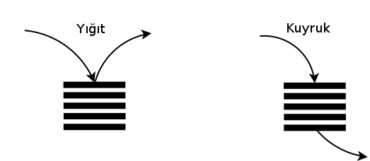
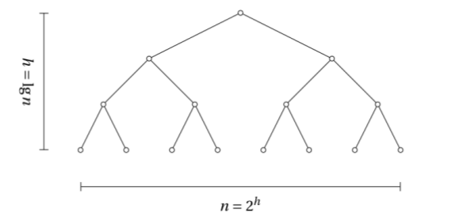
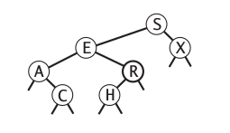

Bilgisayar Bilimdeki (Computer Science) pek çok algoritmanın kullandığı bazı temel yapılar var. Bu yapıları görelim.
Sözlükler, Böleç Anahtarları (Hash Keys)
Elde anahtarlar ve değerlerden oluşan bir liste var, bize bir anahtar verilince o anahtara tekabül eden değeri geri getirmek istiyoruz. Bu anahtarları ve değerleri bildik düz listeye koyabiliriz, ama düz listeler indis bazlı erişim sağlarlar, bu durumda arama yapmak gerekince listeyi sürekli baştan sona kadar taramak gerekecektir. Hesapsal karmaşıklık \(O(n)\).
Daha iyi bir yöntem anahtardan dizin indisi üretmek, boylece dizin indisi ile direk aradığımız elemana gidebiliriz. Eğer anahtarlar, mesela, meyve isimleri ise “portakal’’ anahtarını bir sayı indisine nasıl çeviririz?
Tüm harflerin sayısal karşılığını kullanabiliriz, ve bu sayıları bir şekilde daha büyük bir sayıya çevirerek her anahtar değerinden bir sayısal indis üretebiliriz. Bu indis değeri bir dizine direk erişim sağlayacaktır. Not: Sayı değeri bazen dizinin nihai kapasitesinden daha büyük bir değer döndürebilir, o zaman matematiksel modülo kullanarak (yani bölümden arta kalan) indisin sürekli belli bir aralıkta kalmasını sağlayabiliriz.
Tabii bu durumda farklı anahtarlar aynı indisi değerine gidebilir (çarpışma -collision- durumu, problemler bitmiyor (!)), o zaman çarpışma olan yere bir alt liste ekleriz, arama o noktadan sonra kaba kuvvet ile devam eder.
Programlama dillerinin çoğunda böleç kabiliyeti vardır;
print (hash('portakal'))
print (hash('armut'))1625896577505283192
7027255142208074575Modülo uygulayalım,
print (hash('portakal') % 15) # dizin 15 buyuklugunde
print (hash('armut') % 15)7
10Yığıt (Stacks)
Bu yapı bir listedir, fakat özel bir tür listedir. Ona eklenen öğe en
tepeye / sona eklenir, yani “yığılmış’’ olur, bir saman yığını gibi,
eklenen her şey en tepeye eklenir. Öğe alınması gerektiğinde de en son
eklenen öğe alınır, yani en tepedeki / sondaki öğe. Bu yaklaşıma
ilk-giren-son-çıkar (first-in-last-out, FILO) ismi de veriliyor. Python
ile düz listeler direk yığıt olarak kullanılabiliyor, ve üzerinde ekleme
icin extend, çıkarma için pop çağrıları
yapılabiliyor.
a = []
a.extend(["ddd"])
a.extend(["eddd"])
print (a)
print (a.pop())
print (a)['ddd', 'eddd']
eddd
['ddd']Kuyruk (Queue)
Bu yapı da yine liste gibi, dizili öğeler var, ama eklenen öğe başa eklenir, alınan öğe sondan alınır. Kuyruklara ilk-eklenen-ilk-çıkar (first-in-first-out, FIFO) ismi veriliyor.
from collections import deque
class Queue(deque):
pull = deque.popleft
push = deque.append
q = Queue([3,4,5,4])
print (q.pull())
q.push(44)
print (q.pull())
print (q)3
4
Queue([5, 4, 44])
Hem yığıt hem de kuyrukların farklı kodlama şekilleri görülebiliyor. Üstteki örnekte basitlik amaçlı olarak liste bazlı bir kodlama gösterdik, fakat bağlanmış liste (linked list) kullanan çok hızlı işleyen, etkili kodlar da vardır. Bağlanmış listeler bilindiği gibi hafızada öğeler arası göstergeç (pointer) kullanarak öğede öğeye çok hızlı şekilde atlayabilirler, iki öğe arasına yeni öğe sokmak çok kolaydır, vs. Bağlantılı öğe kullanınca, ayrıca, dizinlerde olduğu gibi illa önceden belli bir büyüklükteki yeri ayırmak gerekmiyor.
Bağlanmış Listeler
Eğer bir listede başa, sona ya da araya öğe sokmak hızlı olsun istiyorsak bağlantılı liste kullanabiliriz. Listede öğeler (node) vardır, ve her öge kendinden sonra gelecek diğer öğeye bir referans tutmakla yükümlüdür. Referans derken bir objeye olan referanstan bahsediyoruz; Python gibi yorumlanan, dinamik, temiz diller arka planda neler olduğunu biraz saklıyorlar aslında, fakat C, C++ gibi diller ile uğraşanlar bilirler, bir referans, ya da göstergeç (pointer) bir hafıza adresidir. O adresin gösterdiği bir başka obje vardır. Göstergecin hangi objeye işaret ettiği rahatlıkla değiştirilebilir.
Alttaki kodda düğüm (node) sınıfını görüyoruz, ve bağlantılı liste bu
düğümleri tutan (daha doğrusu sadece en baştakini tutan) bir objeden
ibaret. Başa yeni bir eleman eklemek demek başlangıç referansı
head‘i bu yeni düğüme doğru “göstertmek’’ ile olur, aynı
şekilde yeni elemanın sonraki obje referansı next daha
önceki baş elemana doğru yönlendirilir.
class Node(object):
def __init__(self, value, next=None):
self.value = value
self.next = next
def __str__(self): return str(self.value)
class LinkedList(object):
def __init__(self):
self.head = None
def _add(self, value):
self.head = Node(value, self.head)
def _printList(self):
node = self.head
while node:
print (node.value,)
node = node.next
print
def _find(self, index):
prev = None
node = self.head
i = 0
while node and i < index:
prev = node
node = node.next
i += 1
return node, prev, i
def _insert_middle(self, index, value):
node, prev, i = self._find(index)
tmp = Node(value, node)
prev.next = tmp
def _delete(self, prev, node):
if not prev:
self.head = node.next
else:
prev.next = node.next
def deleteNode(self, index):
node, prev, i = self._find(index)
if index == i:
self._delete(prev, node)
else:
print('Node with index {} not found'.format(index))
ll = LinkedList()
ll._add(37)
ll._add(99)
ll._add(12)
ll._printList()
node, prev, i = ll._find(1)
print (str(node), 'bulundu')12
99
37
99 bulundu
Şimdi yeni bir örnekte araya bir öğe sokmayı görelim. Ortalarda bir
yerde öğe sokmak için önce indis değerine göre eski eleman bulunur, bu
öğeden sonra eleman sokulacak, ve daha önce head ile
yapılan ekleme örneğinde olduğu gibi, bu eski elemanın göstergeci yeni
objeye, yeni objenin göstergeci eski objenin gösterdiği objeye
yönlendirilecek.
ll = LinkedList()
ll._add(99)
ll._add(12)
ll._insert_middle(1,37)
ll._printList()12
37
99Aradan bir öğe silelim. Silmek için yine göstergeç cambazlığı; silinecek öğeye işaret eden göstergeç silinecek öğenin gösterdiği objeye işaret ettiriliyor, böylece silinecek objeye kimse işaret etmez hale geliyor. Erişilemez hale gelen obje silinmiş demektir.
Not: Bellek idaresi açısından hiç işaret edilmeyen objelere ne olur? Bu objeler dinamik programlama dillerinde etrafta hala bir süre daha kalmaya devam edebilirler, ne zaman dilin çöp toplayıcısı devreye girerse o zaman silinirler. Yani bellekten gerçekten çıkartıldıkları an çöp toplama işlemi sonrasıdır. C gibi dillerde bellekten silme işlemi programcı tarafından tetiklenir, çöp toplayıcı yoktur.

ll = LinkedList()
ll._add(37)
ll._add(99)
ll._add(12)
ll._printList()
node, prev, i = ll._find(1)
ll._delete(prev, node)
ll._printList()12
99
37
12
37Bağlantılı listelerin yığıt, kuyruk gibi yapıların kodlaması için ne kadar faydalı olabileceği sürpriz değil; yığıt ya da kuyruk için hem baş hem sondaki düğümlere referans tutulur, sona, başa ekleme, oradan obje alma gibi işlemler biraz göstergeç cambazlığı ile çok hızlı bir şekilde kodlanabilir.
İki Yönlü Bağlantılı Liste
Üstteki örnek tek yönlü bağlantılı listeydi, iki yönlü referans tutmak ta mümkün.
Önce Genişliğine (Breadth-First) ve Önce Derinliğine (Depth-First) Arama
Elimizde alttaki gibi bir çizit olsun,
graph = {'A': set(['B', 'C']),
'B': set(['A', 'D', 'E']),
'C': set(['A', 'F']),
'D': set(['B']),
'E': set(['B', 'F']),
'F': set(['C', 'E'])}
Arama için bir başlangıç düğümünü alıyoruz, onun komşularını, komşuların komşularını ziyaret ede ede tüm çiziti ziyaret etmiş oluyoruz. Ama bu ziyaret hangi sırada olmalı?
Bu sırayı belirlemek için bir yığıt kullanabiliriz. Yığıt kullanınca aslında önce derinliğe türden bir arama kodlamış oluyoruz. Her ziyaret öncesi bir düğümün komşularını alıp, onları yığıta koyuyoruz, sonra yığıtın en üstündeki düğümü alıp onu ziyaret ediyoruz. Bu işlem aynı seviyedeki tüm komşuları ziyaret etmeden sürekli komşunun komşusu, vs. aldığı için bu bir derinliğe iniş kodlar.
import collections
def dfs(graph, start):
visited, stack = collections.OrderedDict(), [start]
while stack: # yigit bos ise bu ifade false olur
vertex = stack.pop()
# bu kontrol hizli olsun diye OrderedDict kullandik
# boylece hem ziyaret sirasi hatirlanacak, hem de
# dugum ziyaret edilip edilmedigi sorusu cok hizli cevaplanacak
if vertex not in visited:
visited[vertex] = ''
stack.extend(graph[vertex])
return visited
print (dfs(graph, 'A'))OrderedDict({'A': '', 'B': '', 'E': '', 'F': '', 'C': '', 'D': ''})Özyineli formda da yazabiliriz, eğer her komşu için teker teker
dfs’in kendisini çağırırsak derinleme dalış yapmış oluruz,
çünkü komşu listesinde ilk elemanda özyineli çağrı yapınca o geri gelene
kadar o çağrı içindeyiz, o çağrı da bir komşu listesi alıp öğelerde
özyineli çağrı yapacak, böyle derinleme devam edecek… Tabii bu durumda
gidilen yolu hatırlamak için onu bir liste olarak sürekli bir sonraki
özyineli çağrıya geçeriz ve her çağrıdan da geriye döndürürüz.
import collections
def dfs(graph,curr,path = collections.OrderedDict()):
path[curr] = ''
for edge in graph[curr]:
if edge not in path:
path = dfs(graph,edge,path)
return path
print (dfs(graph,'A'))OrderedDict({'A': '', 'C': '', 'F': '', 'E': '', 'B': '', 'D': ''})Şimdi diğer arama şekline, önce genişliğine aramaya gelelim. Bunu yapmak için yığıt veri yapısı yerine kuyruk kullanmak yeterli. Bu durumda komşuları kuyruğa koyduğumuz zaman o komşuların işlenmesi bitmeden sonraki düğümlere geçilmeyecektir, çünkü kuyruğa ilk konan ilk önce işlenir, yani komşuların kendisinin işlenmesi bitmeden onların alt çocuklarına sıra gelmeyecektir. Bu, ziyareti seviye seviye işlem yapmaya zorlar.
def bfs(graph, start):
visited, queue = collections.OrderedDict(), Queue([start])
while queue:
vertex = queue.pull()
if vertex not in visited:
visited[vertex] = ''
for x in graph[vertex]: queue.push(x)
return visited
print (bfs(graph, 'A'))OrderedDict({'A': '', 'C': '', 'B': '', 'F': '', 'D': '', 'E': ''})İkisel Arama Ağaçları (Binary Search Trees -BST-)
Bir BST şu özelliklere sahiptir: bir düğümün sadece iki tane alt düğümü vardır, bu alt düğümlerden solda olanı üst düğümden her zaman küçük, sağda olanı her zaman büyüktür. Ağaçta tekrarlanan öğe yoktur. Ağaç eğer dengeli ise (yani birkaç düğümün altı sürekli dallanarak gittiği ama ötekilerin aynı seviyede kaldığı durum yok ise) o zaman ağaç derinliği \(n\) öğe için \(\log n\) olacaktır.

Böyle bir yapının pek çok farklı şekildeki aramalar için ne kadar elverişli olduğunu görmek zor olmaz; mesela “belli bir aralıktaki tüm düğümleri getir’’ algoritması hızlı işler [3, sf. 403]. Üst düğümden başlarız, baktığımız düğümün eldeki değerden küçük ya da büyük olduğuna göre sola ya da sağa gideriz, vs. Bir özellik daha; mesela alttaki gibi bir ağaca bakalım (harfler arasında da küçüktür / büyüktür irdelemesi yapılabiliyor tabii ki),

Şimdi bu ağacı üstten alta doğru “yassılaştırdığımızı’’ düşünelim, bu
bize anahtarları sıralanmış bir düz yapı vermez mi? Evet. Yani bir ağaç
yapısının doğal bir sonucu olarak her zaman bize çok hızlı bir şekilde
sıralanmış bir liste verebilir. Üstelik ağaca ekleme, silme işlemleri de
hızlı olduğu için bu sıralanmışlık kalıcı olacaktır. Altta
_printInorder bu özelliği gösteriyor.
class Node:
def __init__(self, val):
self.l = None
self.r = None
self.v = val
class BST:
def __init__(self):
self.root = None
def add(self, val):
if(self.root == None):
self.root = Node(val)
else:
self._add(val, self.root)
def _add(self, val, node):
if(val < node.v):
if(node.l != None):
self._add(val, node.l)
else:
node.l = Node(val)
else:
if(node.r != None):
self._add(val, node.r)
else:
node.r = Node(val)
def find(self, val):
if(self.root != None):
return self._find(val, self.root)
else:
return None
def _find(self, val, node):
if(val == node.v):
return node
elif(val < node.v and node.l != None):
return self._find(val, node.l)
elif(val > node.v and node.r != None):
return self._find(val, node.r)
def printInOrder(self):
if(self.root != None):
self._printInOrder(self.root)
def _printInOrder(self, node):
if(node != None):
self._printInOrder(node.l)
print (str(node.v) + ' ')
self._printInOrder(node.r)
def printPreOrder(self):
if(self.root != None):
self._printPreOrder(self.root)
def _printPreOrder(self, node):
if(node != None):
print (str(node.v) + ' ')
self._printPreOrder(node.l)
self._printPreOrder(node.r)
def printPostOrder(self):
if(self.root != None):
self._printPostOrder(self.root)
def _printPostOrder(self, node):
if(node != None):
print (str(node.v) + ' ')
self._printPostOrder(node.l)
self._printPostOrder(node.r)
def closest(self, target):
gap = float("inf")
closest = float("inf")
curr = self.root
while curr:
if abs(curr.v - target) < gap:
gap = abs(curr.v - target)
closest = curr
if target == curr.v:
break
elif target < curr.v:
curr = curr.l
else:
curr = curr.r
return closest.v
bst = BST()
print ("Adding nodes 1 to 10 in the tree...")
for i in range(1, 11):
bst.add(i)
print
print ("Searching for nodes 16 and 6")
f = bst.find(16)
if f: print (f.v)
f = bst.find(6)
if f: print (f.v)
print
print ("Printing preorder...")
bst.printInOrder()Adding nodes 1 to 10 in the tree...
Searching for nodes 16 and 6
6
Printing preorder...
1
2
3
4
5
6
7
8
9
10 En yakın öğe arama fonksiyonu closest ilginç; BST’de bir
öğeyi tam eşitlik üzerinden aramak zaten oldukca hızlı. Şimdi düğümler
arasında aynı gezinme tekniğini kullanarak istenen yaklaşık bir değere
olan o gezilen düğümlere “yakınlığı’’ hesaplayıp, en yakın olanı sürekli
akılda tutup iş bittiğinde bu elemanı geri döndürmek bize en yakın öğeyi
verecektir.
Vektörler ve İkisel Arama (Binary Search)
Aslında ağaç üzerinde gördüğümüz sağa ya da sola gitme kavramı genelleştirilerek bir dizin üzerinde arama yapmak için kullanılabilir. Elimizde sıralanmış (bu önemli) bir dizin olduğunu düşünelim. Şimdi eldeki bir test noktasının bu dizinde olup olmadığını merak ediyoruz. Şöyle bir algoritma kullanabiliriz: dizinin tam ortasındaki öğesine bakarız, eğer aranan eleman o ise, iş biter. Eğer değil ise ve elimizdeki öğe bakılan orta noktadan küçük ise o orta noktanın solundaki hiçbir öğeye artık bakmaya gerek yoktur. Sağ kısma geçeriz, ve aynı işlemi tekrarlarız.
def binary_search(alist, item):
first = 0
last = len(alist)-1
found = False
while first<=last and not found:
midpoint = (first + last)//2 # // tamsayi bolumu demek, 5//2=2
if alist[midpoint] == item:
found = True
else:
if item < alist[midpoint]:
last = midpoint-1
else:
first = midpoint+1
return found, midpoint
testlist = [0, 1, 2, 8, 13, 17, 19, 32, 42,]
print(binary_search(testlist, 3))
print(binary_search(testlist, 13))
print(binary_search(testlist, 20))(False, 3)
(True, 4)
(False, 7)Yakın öğe bulmak benzer mantığı kullanır.
Bakılan kısımlar sürekli yarıya bölündüğü için bakılan kısım çok hızlı bir şekilde küçülecektir, bu işlem hızını arttırır. Karmaşıklık \(O(\log N)\). Lineer arama yapmaktan (kaba kuvvet) daha hızlı.
Yarıya bölüp arama hakkında ilginç bir hikaye: bir projede bir arkadaşımın üzerinde çalıştığı aşağı yukarı 1000 satırlık bir CSS dosyası vardı (CSS’i web sayfaları ile uğraşanlar bilirler). Her nasılsa dosya bir şekilde değişime uğramış, ve işleyen dosya artık işlemez hale gelmiş. Bu dosya üzerinde kaynak kod deposu da kullanılmamış, yani değişimin ne olduğunu depoya sorma şansı yok. CSS’in bir tarafı bozuk ama neresi?
Benim fikrim ikiye bölme tekniği ile hatayı bulmaktı; CSS’in bir yarısını iptal edip diğer kısmını kullan, işliyorsa öteki kısımda devam et, aynı şekilde onu yarıla, ta ki hata ortadan yokoluncaya kadar. Bu şekilde birkaç deneme ile hatalı satırı bulduk.
Öncelik Kuyruğu (Priority Queue)
Bu tür kuyruklarda öğe alma işlemi her zaman en küçük öğeyi verir. Bir öğe eklediğimiz zaman o öğe büyüklüğüne göre kuyruk içindeki yerine otomatik olarak sokulur. Öncelik kuyrukları arka planda ikisel ağaç (binary tree) üzerinden kodlanırlar, en küçük öğeyi almak sabit, müthiş hızlıdır çünkü en küçük öğe her zaman ağacın en tepesindeki düğümdedir. Ekleme de oldukca iyi çalışır. Yani öncelik kuyrukları dışarıdan ikidebir “sırala’’ komutu verilmeden sürekli kendilerini sıralı halde tutan bir yapıdırlar. Bu kuyruklar pek çok bilgisayar bilim algoritmasının demirbaşıdır.
from heapq import heappush, heappop
from random import randrange
class pqueue():
def __init__(self): self.data = []
def push(self,x): heappush(self.data,x)
def pull(self): return heappop(self.data)
def __str__(self): return ''.join(str(self.data))
pq = pqueue()
# rasgele degerler
for i in range(10): pq.push(randrange(100))
print (pq)
print (pq.pull())
pq.push(100)
print (pq)[3, 8, 86, 50, 19, 91, 97, 90, 62, 70]
3
[8, 19, 86, 50, 70, 91, 97, 90, 62, 100]Biraz daha kapsamlı bir kod pqdict paketinde, bu önemsel
kuyruğa anahtar / değerler veriliyor, anahtar değerleri mesela araba
modelleri, önem ise fiyatları olabilir, ve değerler çekildiğinde değeri
en az (önemi en fazla) olan değer çekilecektir. Ayrıca bu kuyruğu bir
döngüyle “gezmek’’ kuyruktan değerlerin çekilmesini de sağlıyor.
Kuyruğun iç kodlamasında kullandığı temel yapı ikisel yığın (binary
heap) adlı bir yapıdır.
from pqdict import pqdict
Q = pqdict()
Q['toyota'] = 4
Q['mercedes'] = 10
Q['bmw'] = 6
for c in Q: print (c)toyota
mercedes
bmwBir ilginç özellik daha: bir döngü içinde değilsek []
operatörü hem öncelik değerine bakılmasını hem de o değerin, anahtar
kuyruktan çekilmeden, değiştirilebilmesini sağlıyor.
Q['toyota'] = 4
Q['mercedes'] = 10
Q['bmw'] = 6
print (len(Q))
Q['bmw'] = 1
print ('hala', len(Q))
for c in Q: print (c)3
hala 3
bmw
mercedes
toyotaSilmeden bakabilmek ve güncelleyebilmek önemli bir özellik (Java
karşılığı PG.java dosyasında).
Bellek Kullanımı
Bitirmeden önce bellek kullanımı hakkında birkaç paragraf yazalım. Algoritmalarımız için veri yapısı seçerken o veri yapısının belleği nasıl idare ettiğini bilmek iyi olur. Mesela sayı indisli bir dizin / liste kullanıyoruz, dizinlere indis bazlı erişim çok hızlıdır, burası güzel. Fakat dizinin sürekli büyümesi gerekiyorsa bu büyüme arka planda nasıl idare ediliyor? Bazı kodlamalar vardır ki dizinleri parça parça büyütür, yani 10’dan 20’ye büyümek gerekiyorsa 20 öğelik yeni yer ayrılır, ve 10 öğe yeni listeye kopyalanır. O zaman parçalar küçük ise bu kopyalama işleminde sırasında zaman kaybı olabilir. Eğer başa, sona sürekli ekleme yapıldığı dinamik bir durum var ise belki bağlantılı liste kullanmak daha iyidir.
Kaynaklar
[1] Heatland, Python Algorithms
[2] Wahl, Algorithms in Python
[3] Sedgewick, Algorihms, 4th Edition